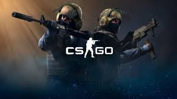

Популярные игры
Counter Strike Global Offensive

Как и предыдущие игры серии, Counter-Strike: Global Offensive является трёхмерным многопользовательским шутером от первого лица, в котором игроки распределяются по двум командам и сражаются друг с другом. В игре представлены две команды: террористы и спецназ, а также три сценария игры: разминирование бомбы, спасение заложника и королевская битва. В первом сценарии игроки, играющие за команду террористов, должны заминировать бомбу в одной из нескольких точек закладки, а спецназ — успешно её разминировать. Во втором сценарии игрокам из команды террористов необходимо не дать противоборствующей команде спасти заложников, которых они похитили
Скачать/Купить на официальном сайте
Minecraft:Dungeons
Игра отличается от Minecraft тем, что в ней нет крафта предметов и возможности ломать или ставить блоки. Игровые действия разворачиваются в подземелье, там игрок исследует сгенерированные подземелья, в которых в свою очередь появляются мобы, также в игре присутствуют головоломки и поиск сокровищ
Игрок может использовать любое найденное оружие, инструменты или доспехи, какие сам сочтёт нужным
Купить на официальном сайте
Watch:Dogs 2
В игре Watch Dogs 2 есть набор основных миссий, задания для подготовки к ним и побочные квесты. По структуре ключевые операции напоминают ограбление в GTA 5 и убийства в Assassin’s Creed 2[4]. Однако, в отличие от протагонистов перечисленных игр, герои здесь являются не преступниками или убийцами, а хакерами. Поэтому Watch Dogs 2 подразумевает стелс-прохождение, хотя в игре не исключено применение оружия[5].
Для выполнения задания игроку не навязывается единственно правильное решение, а как в «песочнице» предоставляется свобода выбора, заявленную цель можно достичь несколькими способами. Разнообразию действий способствует дизайн уровней, позволяющий до одной и той же локации добраться разными путями.
Для прохождения миссий потребуется взаимодействовать с системами города. Хакеры могут взломать всё, что оснащено микросхемой: телефоны, компьютеры, камеры видеонаблюдения, светофоры, автомобили, электрощиты, трансформаторы и т. д. Предметы, которые можно взломать, главный герой видит благодаря режиму «NetHack». Взлом позволяет персонажам получать информацию, строить козни врагам, создавать ловушки, в общем, вершить правосудие на свой лад.
Также стоит отметить систему прокачки — возможность улучшения навыков главного героя, которую легко подстроить под свой стиль игры[6]. Можно прокачивать навыки социального взлома или управления автомобилем, учиться взлому городских коммуникаций или совершенствовать своих дронов.
Главный герой игры — хакер, родом из Окленда, штат Калифорния, по имени Маркус Холлоуэй переезжает в Сан-Франциско, в сердце Кремниевой Долины, где, объединившись с группировкой активистов из организации DedSec, бросает вызов алчным корпорациям и коррумпированным властям города, взяв под управление обновлённую универсальную систему ctOS 2.0 и выкладывая свои действия в социальные сети.
Купить на официальном сайте
UnderTale

Undertale (дословно переводится как «Подземная сказка» или «Подземная история») — компьютерная ролевая игра, разработанная американским программистом и композитором Тоби Фоксом. Игрок управляет ребёнком, который случайно упал в яму и попал в Подземелье, в большой изолированный от людей мир. В попытках вернуться домой игрок встречает множество различных существ, некоторые из которых относятся к нему враждебно. Во время битвы игрок управляет маленьким сердцем, которое символизирует душу героя; избегая атак противника в стиле «Bullet Hell», игрок может убить нападавшего или пощадить, что впоследствии будет влиять на концовку. Также на концовку влияет взаимодействие с иными персонажами вне сражения[⇨].
Тоби Фокс создал Undertale своими силами, включая написание сюжета и музыки; лишь некоторые дополнительные спрайты были нарисованы другими художниками. На создание Undertale Фокса вдохновила японская ролевая игра EarthBound, а также английская ситуационная комедия «Мистер Бин». Изначально предполагалось, что игра будет длиться примерно два часа и будет выпущена в середине 2014-го года, но разработка затянулась на ближайшие три года[⇨].
Игра была выпущена для Microsoft Windows и OS X в сентябре 2015 года, а затем для Linux в июле 2016 года. Версия для PlayStation 4 и PlayStation Vita была выпущена в августе 2017 года, а в сентябре 2018 года, игра вышла на Nintendo Switch. После выпуска копии Undertale стали продаваться миллионами, критики высоко оценили игру, и она была выдвинута на множество наград, в том числе как «Игра года»[⇨]. В конце 2018 года была выпущена первая глава игры Deltarune, частично связанная с Undertale[⇨].
Купить на официальном сайте